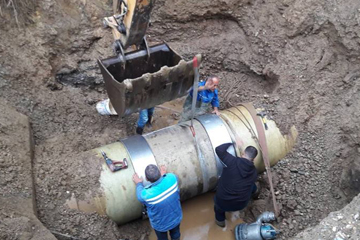
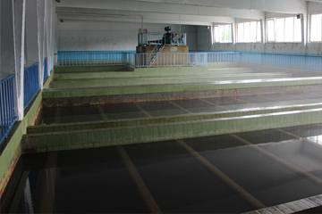

Procesi teknologjik i përpunimit të ujit në Stacionin e Filtrimit
Stacioni i Filtrimit është objekt i ndërtuar enkas vetëm për përpunimin e ujit. Momentalisht punon vetëm një fazë , me që faza e dytë akoma nuk është ndërtuar. Kapaciteti i prodhimit maksimal përafërsisht është 700 l/s dhe posedon një aparaturë më bashkëkohore.
Pirgu – Nivelmarrësi
Në skemën e paraqitur për përpunimin e ujit të liqenit Radoniqi, po e përshkruajmë në disa pika të shkurta. Uji i papërpunuar merret nga akumulimi i ujit Radoniqi nëpërmes pirgut-nivelmarrësit (5 nivelmarrësa), me rënie të lirë uji rrjedhë deri në kthinën ndarëse me kapacitet përafërsisht 500-700 l/s.
Objekti i KRU Gjakova
Objekti kryesorë i kompanisë, këtu në këtë objekt kryhen pagesat e konsumatorëve, mbahen mbledhjet e bordit drejtues etj.KRU Gjakova, si projekt i nisur nga një grup entuziastësh, sot është ndër kompanitë e shërbimeve publike të ujësjellësit më të mëdha në rajon, me zonën më të madhe të shërbimit dhe ndoshta me shërbimin më të mirë ndaj konsumatorëve. Shërbimet e kësaj kompanie nuk janë ndërprerë as për një çast të vetëm që nga inaugurimi i sistemit, që tregon një përkushtim të pamohueshëm të menaxhmentit dhe punëtorëve


NEWS
Zona gjeografike e distribuimit
K.R.U Gjakova bën furnizimin me ujë të pijes për Regjionin e Gjakovës, Rahovecit dhe fshatrave të komunës së Prizrenit. Rrjeti kryesorë përfshin mbi 300 km2, ndërsa me rrjetin sekondar-shpërndarës arrin rreth 400 km2.
Salla e filtrimit
Uji i përpunuar kimikisht rrjedhë në fushën e filtrimit, ku në këtë fazë kryhet filtrimi i ujit me anë të rërës së kuarcit duke kaluar nëpër filterat që gjinden nën rërë.
Këtë fazë mundë ta quajmë:
Faza e përpunimit të ujit mekanik.
Uji i filtruar rezervohet në rezervuarin me kapacitet prej 2.122 m3 ujë, pastaj me klor kryhet dezinfektimi i ujit të pijes si fazë përfundimtare e përpunimit të ujit.
Uji i përpunuar plotësisht, nga rezervuari i Stacionit të filtrimit rrjedhë gjerë në rezervuarin qendror në Qerim me kapacitet 2 x 5.000 m3 dhe pastaj shpërndahet në gjithë rrjeten e Hidrosistemit “Radoniqi” për ujë të pijshëm.
Hidrosistemi “Radoniqi”, si projekt i nisur nga një grup entuziastësh, sot është ndër Kompanitë e shërbimeve publike të ujësjellësit dhe kanalizimit të ujërave të zeza më të madha në rajon, me zonën më të madhe të shërbimit dhe ndoshta me shërbimin më të mirë ndaj konsumatorëve. Shërbimet e kësaj kompanie nuk janë ndërprerë as për në çast të vetme që nga inaugurimi i sistemit madje as në kohë të luftës, që tregon një përkushtim të pamohueshëm të menaxhmentit dhe punëtorëve të vet për ofrimin e shërbimeve.
Hidrosistemi "Radoniqi" është nisur si projekt shumë-destinorë ku aktivitetet kryesore të tij janë paraparë të jenë ujitja, furnizimi me ujë të pijes, meliorimi i tokave bujqësore dhe mbrojtja e ambientit. Ky projekt është bashkë-financuar nga dy banka, nga Banka Ndërkombëtare për Rindërtim dhe Zhvillim (BNRZH) dhe Banka e Kosovës BANKOSI me pjesëmarrje 2/5 dhe 3/5 respektivisht. Kështu Gjakova për herë të parë u përfshi në një projekt të ri që konsiderohej në atë periudhë si një prej veprave më kapitale në Kosovë dhe në ish federatën Jugosllave.